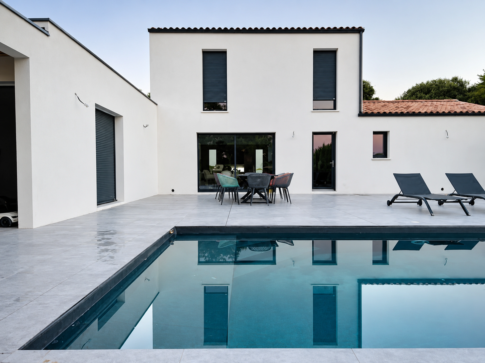
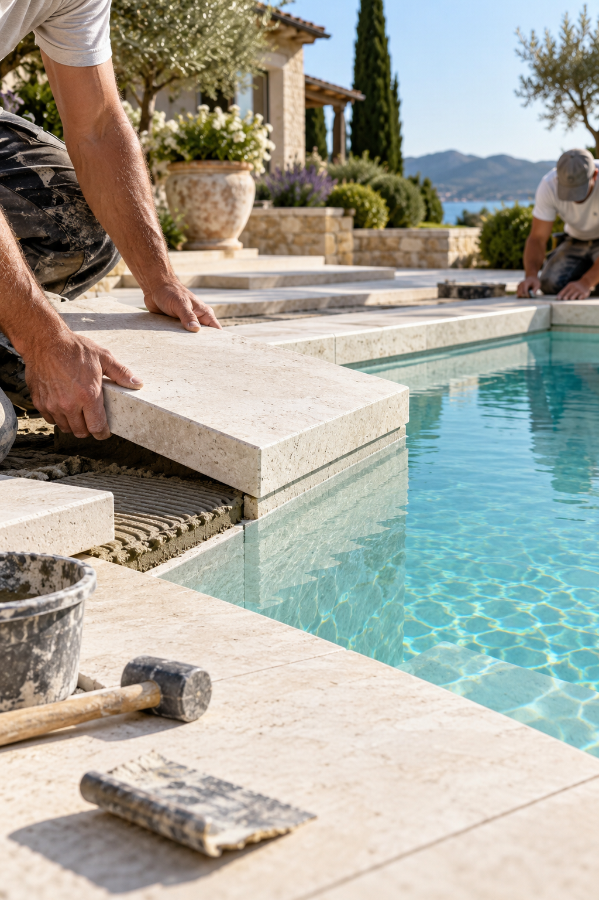
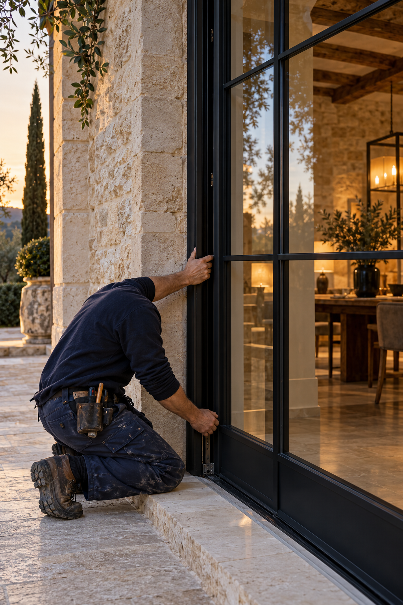

Votre extérieur. Une autre façon de vivre chez vous.
Créer un bassin, redonner vie à une piscine ou repenser les abords : chaque choix compte pour obtenir un espace agréable à vivre et simple à entretenir.
Une piscine pensée pour votre terrain. Et pour vous.
L’objectif n’est pas seulement de choisir une forme et une couleur. Il faut trouver le bon équilibre entre vos usages, l’espace disponible, les contraintes techniques et le coût global du projet.
01 · L’implantation
Lire le terrain avant de dessiner le bassin.
Ensoleillement, orientation, vues depuis la maison, végétation, vent, intimité et accès au jardin influencent le confort au quotidien. Nous examinons aussi la pente, les niveaux et les conditions d’accès nécessaires aux travaux.
Relevé de l’emplacement envisagé et des distances disponibles.
Repérage des réseaux connus, des points d’eau et de l’alimentation électrique.
Accès des engins, évacuation des terres et contraintes de livraison.
Implantation du local technique et cheminement des canalisations.
02 · Les usages
La bonne dimension est celle de votre quotidien.
Baignade en famille, nage, détente, accueil de visiteurs ou recherche d’un bassin compact : nous partons de la manière dont vous utiliserez la piscine. La profondeur, les marches et la circulation autour du bassin se définissent à partir de ces usages.
Dimensions, forme, accès à l’eau et espaces de repos sont étudiés ensemble. Les solutions constructives et les finitions sont précisées au devis après examen de votre projet.
03 · L’enveloppe
Voir le projet dans son ensemble.
Un budget de piscine peut comprendre le bassin, le terrassement, les réseaux, l’étanchéité, les équipements, la protection et les aménagements alentour. Nous distinguons le périmètre de base des options pour faciliter vos arbitrages.
Avant le chantier, les démarches et les éventuelles contraintes d’urbanisme sont identifiées selon le lieu et la nature des travaux. Le planning dépend notamment de l’étude, des choix techniques, des accès et des autorisations nécessaires.

Rénover une piscine existante
Conserver ce qui fonctionne. Améliorer ce qui doit l’être.
Une rénovation commence par un état des lieux. L’aspect du bassin ne suffit pas à expliquer une perte d’eau, un traitement difficile ou une consommation excessive.
État du bassin et étanchéité
Nous faisons le point sur l’âge du bassin, le revêtement, les pièces à sceller, les joints et les défauts visibles. Un problème de fuite ou de structure peut nécessiter des investigations spécifiques avant de définir les travaux.
L’installation hydraulique, la filtration et les équipements existants sont examinés pour déterminer ce qui peut être conservé, entretenu ou remplacé.
Pompe, filtre, vannes et état apparent des raccords.
Compatibilité d’un nouvel équipement avec l’existant.
Accessibilité du matériel pour l’entretien.
Possibilité de moderniser la régulation et le pilotage.

Le confort technique
Des équipements choisis pour leur utilité.
Filtration & traitement
Une eau agréable, un entretien compris.
La filtration est dimensionnée en fonction du bassin et de son usage. Le mode de traitement et la régulation se choisissent selon vos habitudes, le temps que vous souhaitez consacrer à l’entretien et les contraintes de l’eau.
Pompe, média filtrant, traitement, contrôle du pH et éventuelle automatisation doivent fonctionner comme un ensemble. Les produits, réglages et opérations d’entretien sont expliqués lors de la prise en main.
Chauffage & couverture
Prolonger la saison, maîtriser les pertes.
Le chauffage éventuel se réfléchit avec la couverture, l’exposition, le volume d’eau et la période de baignade souhaitée. Nous étudions l’emplacement du matériel et ses conditions d’installation.
La protection du bassin, son usage et son intégration au jardin font partie de la réflexion. Une couverture ne se choisit pas seulement sur son apparence : son fonctionnement et son adéquation au bassin doivent être vérifiés.
Éclairage & pilotage
Le bon niveau de confort.
Éclairage du bassin, commande des équipements, programmation et suivi des paramètres peuvent simplifier l’utilisation. Nous définissons les fonctions utiles et la compatibilité des équipements, sans multiplier les automatismes inutiles.
Les consommations futures dépendent de nombreux choix : température de consigne, couverture, durée de filtration, exposition et habitudes d’utilisation. Ces paramètres sont abordés au moment de l’étude.

Au-delà du bassin
Les abords font partie de l’expérience.
Margelles, terrasse, cheminements, gestion des niveaux et raccordement au jardin composent un ensemble. Les matériaux se choisissent pour leur aspect, leur entretien et leur comportement dans un environnement humide.
Nous étudions les surfaces utiles, la circulation, la gestion des eaux et les transitions avec l’existant. Les travaux paysagers ou les ouvrages spécifiques sont définis dans le périmètre du projet.
De l’idée à la mise en eau
Un déroulement lisible.
01 · Échange et étude
Votre questionnaire permet de préparer la visite : localisation, dimensions, terrain, accès, équipements, budget et calendrier. Les points à vérifier sur place sont identifiés.
02 · Proposition et préparation
Le devis précise les travaux retenus et les options. L’organisation du chantier, les accès, les choix de finition et les démarches nécessaires sont cadrés avant le démarrage.
03 · Réalisation et réception
Les phases du chantier sont coordonnées jusqu’aux contrôles, aux réglages et à la prise en main. La réception permet de faire le point sur les travaux réalisés et les consignes d’entretien.
Les questions à se poser
Avant de vous lancer.
Peut-on rénover seulement une partie de la piscine ?
Oui, selon l’état de l’existant et les compatibilités techniques. L’étude distingue les travaux prioritaires des améliorations qui peuvent être réalisées dans un second temps.
Que préparer pour un premier échange ?
La commune, quelques dimensions, les contraintes d’accès, vos envies, une enveloppe et une période souhaitée. Pour une rénovation, ajoutez l’âge du bassin et les problèmes rencontrés.
La terrasse peut-elle être incluse au projet ?
Le bassin et les abords peuvent être étudiés ensemble. Les surfaces, les matériaux et les interventions retenues sont détaillés dans la proposition.
Peut-on connaître un prix sans visite ?
Le questionnaire sert à orienter l’étude. Un chiffrage précis dépend notamment de l’accès, du terrassement, de l’état du terrain ou du bassin et du niveau d’équipement demandé.
Votre projet commence par les bonnes questions.
Décrivez votre piscine et votre terrain. Le questionnaire s’adapte à la création, à la rénovation et aux aménagements extérieurs.
Nos réalisations en images
Un chantier, plusieurs regards.
Chaque vignette ouvre les photos d’un seul projet. Parcourez les réalisations ou explorez les différentes étapes d’un même chantier.